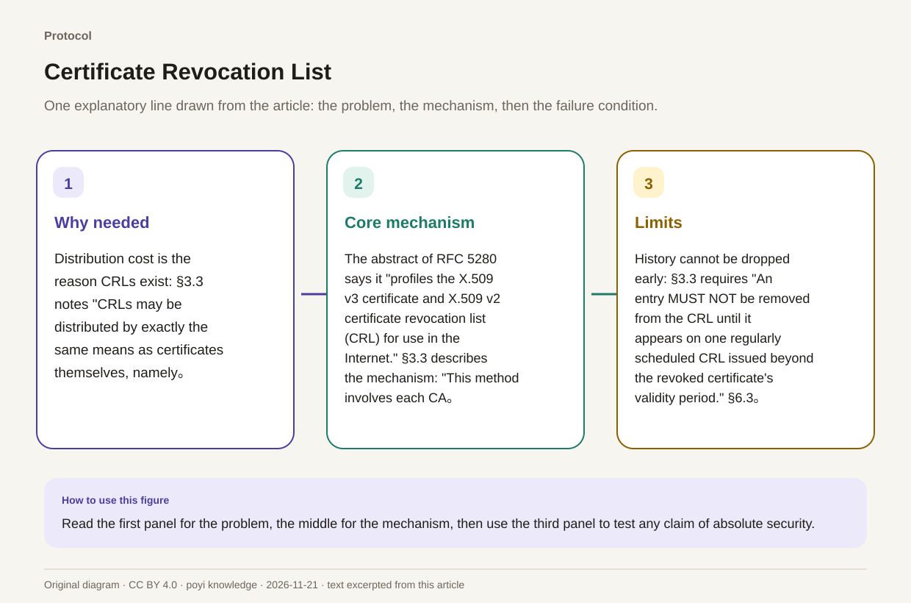
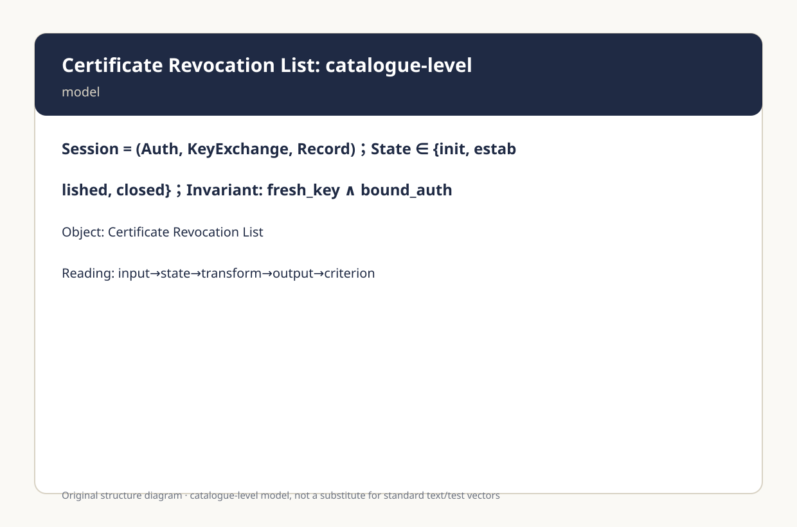

Principles
Protocol: Certificate Revocation List (证书吊销列表). The abstract of RFC 5280 says it "profiles the X.509 v3 certificate and X.509 v2 certificate revocation list (CRL) for use in the Internet." §3.3 describes the mechanism: "This method involves each CA periodically issuing a signed data structure called a certificate revocation list (CRL)." and its content — "A CRL is a time-stamped list identifying revoked certificates that is signed by a CA or CRL issuer and made freely available in a public repository." Identification is narrow: "Each revoked certificate is identified in a CRL by its certificate serial number." §5.1.2 lists the mandatory fields: "The required fields identify the CRL issuer, the algorithm used to sign the CRL, and the date and time the CRL was issued."

Why it matters
Distribution cost is the reason CRLs exist: §3.3 notes "CRLs may be distributed by exactly the same means as certificates themselves, namely, via untrusted servers and untrusted communications." Relying parties check both signature and status — "that system not only checks the certificate signature and validity but also acquires a suitably recent CRL and checks that the certificate serial number is not on that CRL." To make caching and supersession decidable, §5.2 mandates two extensions: "Conforming CRL issuers are REQUIRED to include the authority key identifier (Section 5.2.1) and the CRL number (Section 5.2.3) extensions in all CRLs issued." §5.2.3 explains the purpose: "The CRL number is a non-critical CRL extension that conveys a monotonically increasing sequence number for a given CRL scope and CRL issuer."
Applications
Triggers are enumerated, §3.3 including "Such circumstances include change of name, change of association between subject and CA" and "compromise or suspected compromise of the corresponding private key." The time fields carry hard rules: §5.1.2.5 states "Conforming CRL issuers MUST include the nextUpdate field in all CRLs." and §5.1.2.4 sets the encoding boundary — "CRL issuers conforming to this profile MUST encode thisUpdate as UTCTime for dates through the year 2049." Empty lists are specified too: §5.1.2.6 "When there are no revoked certificates, the revoked certificates list MUST be absent." §5.3 recommends detail: "CRL issuers SHOULD include reason codes (Section 5.3.1) and invalidity dates (Section 5.3.2) whenever this information is available."

Limits & attacks
History cannot be dropped early: §3.3 requires "An entry MUST NOT be removed from the CRL until it appears on one regularly scheduled CRL issued beyond the revoked certificate's validity period." §6.3 assumes a refresh path: "if the next update time of a CRL has passed, the algorithm assumes a mechanism to fetch a current CRL and place it in the local CRL cache." Processability has limits, §5.2 saying "If a CRL contains a critical extension that the application cannot process, then the application MUST NOT use that CRL to determine the status of certificates." And CRLs are not the only route: §3 records "Revocation status information may be provided using the Online Certificate Status Protocol (OCSP) [RFC2560], certificate revocation lists (CRLs), or some other mechanism." while §5 permits a CA to skip them: "Conforming CAs are not required to issue CRLs if other revocation or certificate status mechanisms are provided."
History
RFC 5280 is signed by D. Cooper, S. Santesson, S. Farrell, S. Boeyen, R. Housley and W. Polk, published May 2008 with "Obsoletes: 3280, 4325, 4630" in the header. §1 places it in a standards family: "This specification is one part of a family of standards for the X.509 Public Key Infrastructure (PKI) for the Internet." §5.1.1 records the key choice available to a CA: "MAY use one private key to digitally sign certificates and CRLs, or MAY use separate private keys". §8 clarifies that confidentiality is not assumed: "Since certificates and CRLs are digitally signed, no additional integrity service is necessary."
Worked example & verification
Formal model and reproduction steps
[\mathrm{Adv}^{\Pi}_A(\lambda)\le n\cdot\mathrm{Adv}^{\mathrm{prf}}F(\lambda)+\varepsilon{\mathrm{aead}}(\lambda)]
Certificate Revocation List: the registered public parameters, key material or randomness, and message are mapped through the stated transformation to an output checked against the registered criterion. The worked example is a structural reproduction, not a new test vector; parameter ranges, standard versions and implementation details remain source-bound.
References
- Wikipedia search entry for 证书吊销列表. https://zh.wikipedia.org/w/index.php?search=%E8%AF%81%E4%B9%A6%E5%90%8A%E9%94%80%E5%88%97%E8%A1%A8
- Handbook of Applied Cryptography (Menezes, van Oorschot, Vanstone). https://www.cacr.math.uwaterloo.ca/hac/